Chapter 10: Verb — kaam wale shabd¶
Verb — vaakya ka dil
Verb wo shabd hai jo kaam, hona ya haalat batata hai. Agar poori English grammar me ek hi cheez theek karni ho, to verb karo — kyunki tense, voice, agreement, question banana, sab verb par tikaa hai. Ye chapter thoda lamba hai, par iske baad bahut saare chapters apne aap aasaan lagne lagenge.
Ek line me
A verb shows an action, a state, an occurrence or possession. Kaam (action), haalat (state), kuch ghatna (occurrence), ya kisi cheez ka hona / paas hona (possession) — ye chaaron verb batata hai. Bina verb koi vaakya poora nahi hota.
- She writes a letter. Action — kaam ho raha hai: wo chitthi likhti hai.
- He is happy. State — koi kaam nahi, sirf haalat: wo khush hai.
- It rained yesterday. Occurrence — kuch ghata, kisi ne kiya nahi: kal baarish hui.
- They have a car. Possession — kisi ke paas kuch hai: unke paas gaadi hai.
10.1 Verb ke prakaar — poora ped¶
Verb ko kai tarah se baanta jaata hai, aur ye baantein ek doosre ke upar chalti hain. Ek hi verb ek saath "main verb", "transitive" aur "irregular" ho sakta hai — jaise write. Isliye ped ko mukaabla na samjho, chaar alag sawaal samjho.

10.2 Main verb aur Helping verb¶
Ek vaakya me asli matlab main verb deta hai. Uske saath aane wale chhote verb — is, am, are, has, have, will, do — tense, sawaal aur negative banane me madad karte hain. Inhe auxiliary ya helping verb kehte hain.
- She is writing a letter. "writing" asli kaam hai; "is" sirf bata raha hai ki abhi chal raha hai.
- Do you know him? Sawaal banane ke liye "do" aage aaya; matlab "know" me hi hai.
| Helping verb | Roop | Kaam |
|---|---|---|
| be | is, am, are, was, were, been, being | continuous aur passive banana |
| have | have, has, had | perfect tense banana |
| do | do, does, did | sawaal, negative, aur zor dena |
Teeno khud bhi main verb ban sakte hain
I have a bike. — yahan "have" khud main verb hai.
I have finished my work. — yahan "have" helping hai, "finished" main. Dekho ki uske baad doosra verb aa raha hai ya nahi — wahi faisla karta hai.
10.3 Modal verbs — jo kabhi badalte nahi¶
Modals wo helping verbs hain jo sambhavna, kshamta, anumati ya majboori batate hain. Inke do pakke niyam hain, aur dono yaad rakhna kaafi hai.
Modal ke do pakke niyam
1. Modal ke baad verb hamesha pehle roop me — bina -s, bina -ing, bina to.
2. Modal khud kabhi nahi badalta — na -s lagta hai, na -ed. ✓ She can swim. ✗ She cans swim. ✗ She can swims.
| Modal | Kya batata hai | Example |
|---|---|---|
| can | kshamta, aam anumati | I can drive. |
| could | pehle ki kshamta, politeness | Could you help me? |
| may | formal anumati, sambhavna | May I come in? |
| might | kam sambhavna | It might rain today. |
| will | bhavishya, vaada | I will call you. |
| would | politeness, kalpana | I would like tea. |
| shall | sujhaav (formal) | Shall we start? |
| should | salaah | You should rest. |
| must | pakki majboori | You must wear a helmet. |
| ought to | naitik zimmedari | We ought to help them. |
can aur could — anumati maangne me farq
Can I borrow your pen? — dosti me theek.
Could I borrow your pen? — zyada vinamra, kisi bade ke saath.
May I borrow your pen? — sabse formal, office ya interview me.
10.4 Transitive aur Intransitive — object leta hai ya nahi¶
Verb ke baad poochho "kya?" ya "kisko?". Agar jawaab milta hai, verb transitive hai. Agar jawaab ka koi matlab nahi banta, verb intransitive hai.
| Verb | Sawaal | Jawaab | Prakaar |
|---|---|---|---|
| She wrote a poem. | Kya likha? | a poem ✓ | Transitive |
| He slept early. | Kya soya? | koi jawaab nahi ✗ | Intransitive |
| They helped us. | Kisko? | us ✓ | Transitive |
| The baby laughed. | Kya hansa? | jawaab nahi ✗ | Intransitive |
Kai verb dono hote hain
The bell rang. (intransitive) / She rang the bell. (transitive)
The window broke. / He broke the window. Isliye verb ko list me nahi, vaakya me dekho.
Intransitive verb ke baad preposition chahiye hota hai
- Galat: We will reach at Delhi at 9.
- Sahi: We will reach Delhi at 9.
-
Kyun: "Reach" transitive hai — seedha object leta hai. Par "arrive" intransitive hai, isliye uske saath preposition zaroori: arrive in Delhi, arrive at the airport.
-
Galat: Let us discuss about the plan.
- Sahi: Let us discuss the plan.
- Kyun: "Discuss" transitive hai, isliye object seedha aata hai. Hindi me "ke baare me" hota hai, isliye "about" ghus jaata hai. Isi tarah: enter the room (not enter into), marry her (not marry with her).
10.5 Linking verbs — pul banane wale verb¶
Linking verb koi kaam nahi batata. Wo subject ko uski pehchaan ya haalat se jod deta hai — jaise ek pul.
| Linking verb | Example | Dhyan |
|---|---|---|
| be (is, am, are, was, were) | He is busy. | sabse aam |
| seem, appear | She seems tired. | lagta hai |
| become, get, turn, grow | The sky turned dark. | badalna |
| feel, look, smell, sound, taste | This tastes sweet. | indriyon wale |
| remain, stay | He remained calm. | bana rehna |
Linking verb ke baad adjective, adverb nahi
✓ The food tastes good. ✗ The food tastes well.
✓ She looks beautiful. ✗ She looks beautifully. Kyunki ye verb subject ke baare me bata rahe hain, kaam ke baare me nahi. Subject noun hai → noun ko adjective chahiye.
10.6 Verb ke paanch roop¶
Har English verb ke paanch roop hote hain. Dictionary me aksar teen likhe jaate hain — V1, V2, V3 — aur yahi teen tense banane me kaam aate hain.
| Roop | Naam | walk (regular) | write (irregular) | Kahan lagta hai |
|---|---|---|---|---|
| V1 | base | walk | write | present, modal ke baad, to ke saath |
| V1-s | third person | walks | writes | he / she / it ke saath |
| V2 | past simple | walked | wrote | simple past |
| V3 | past participle | walked | written | have/has/had ke baad, passive me |
| V-ing | present participle | walking | writing | continuous tenses |
Regular aur Irregular ka farq
Regular: V2 aur V3 dono me sirf -ed lagta hai — play → played → played.
Irregular: shabd andar se badal jaata hai — go → went → gone. English me lagbhag 200 irregular verbs hain, par roz ke kaam ke liye 60-70 kaafi hain.
Roz kaam aane wale irregular verbs¶
| V1 | V2 | V3 | V1 | V2 | V3 |
|---|---|---|---|---|---|
| go | went | gone | eat | ate | eaten |
| see | saw | seen | take | took | taken |
| do | did | done | give | gave | given |
| come | came | come | run | ran | run |
| buy | bought | bought | bring | brought | brought |
| think | thought | thought | teach | taught | taught |
| speak | spoke | spoken | break | broke | broken |
| write | wrote | written | drive | drove | driven |
| begin | began | begun | drink | drank | drunk |
| put | put | put | cut | cut | cut |
V2 aur V3 ki jagah badal jaana
- Galat: I have saw that movie.
- Sahi: I have seen that movie.
-
Kyun: "have / has / had" ke baad hamesha V3 aata hai — seen, gone, done, written. V2 (saw) sirf akela past banane ke liye hai: I saw that movie.
-
Galat: He did not went to school.
- Sahi: He did not go to school.
- Kyun: "did" ne pehle se past bata diya — ab main verb pehle roop me hi rahega. Ek vaakya me past do baar nahi batate.
10.7 Finite aur Non-finite verb¶
Finite verb wo hai jo subject aur tense ke hisaab se badalta hai — yahi vaakya ka asli verb hota hai. Non-finite verb badalta nahi; wo noun ya adjective jaisa kaam karta hai.
| Prakaar | Roop | Example | Kaam |
|---|---|---|---|
| Finite | subject + tense ke saath badalta hai | She plays. / They played. | asli verb |
| Infinitive | to + V1 | I want to sleep. | noun jaisa |
| Gerund | V-ing, noun ki tarah | Swimming is good exercise. | noun jaisa |
| Participle | V-ing ya V3, adjective ki tarah | a broken glass / a running train | adjective jaisa |
Ek vaakya me ek hi finite verb
I want to go home. — "want" finite hai, "to go" non-finite. Isliye tense sirf "want" par lagta hai: I wanted to go home. "to goed" kabhi nahi hota — ab wajah samajh aa gayi?
Preposition ke baad gerund, infinitive nahi
✓ She is good at singing. ✗ good at to sing
✓ I look forward to meeting you. ✗ to meet you
Yahan "to" infinitive ka nahi, preposition hai — isliye -ing.
10.8 Stative verbs — jo continuous me nahi jaate¶
Kuch verb kaam nahi, haalat batate hain. Haalat chalti nahi, hoti hai — isliye inhe -ing me nahi daalte.
| Shreni | Verbs |
|---|---|
| Soch | know, think (maanna), believe, understand, remember, forget, mean |
| Bhaav | like, love, hate, want, need, prefer |
| Indriyan | see, hear, smell, taste (lagna) |
| Maalikana | have (rakhna), own, belong, possess |
| Hona | be, seem, appear, cost, weigh, contain |
10.9 Wo galtiyan jo hum sach me karte hain¶
Verb ki sabse aam Indian-English galtiyan
- Galat: I am having a car.
- Sahi: I have a car.
-
Kyun: Jab "have" ka matlab maalikana ho, wo stative verb hai — continuous me nahi jaata. "I am having" sirf tab theek hai jab kaam ho raha ho: I am having lunch (khana kha raha hoon), I am having a bath.
-
Galat: He don't know the answer.
- Sahi: He doesn't know the answer.
-
Kyun: He / she / it third person singular hain, aur unka helping verb "does" hota hai. Aur dhyan do — "does" ke baad main verb pehle roop me: doesn't know, na ki doesn't knows.
-
Galat: I am agree with you.
- Sahi: I agree with you.
-
Kyun: "Agree" khud ek poora verb hai — usse pehle "am" lagane ki zaroorat nahi. Hindi me "main sehmat hoon" me "hoon" aata hai, isliye "am" ghus jaata hai.
-
Galat: She is knowing the answer.
- Sahi: She knows the answer.
-
Kyun: "Know" stative hai — jaanna ek haalat hai, kaam nahi. Isi liye "I am knowing", "I am understanding", "I am liking" teeno galat hain.
-
Galat: We discussed about the project yesterday.
- Sahi: We discussed the project yesterday.
-
Kyun: "Discuss" transitive hai — object seedha leta hai, preposition ki zaroorat nahi. Isi list me: enter the hall, attend the meeting, answer the question, reach home.
-
Galat: One of my friend don't like coffee.
- Sahi: One of my friends doesn't like coffee.
-
Kyun: Do galtiyan ek saath: "one of" ke baad plural noun (friends), par asli subject "one" hai — singular — isliye verb bhi singular: doesn't.
-
Galat: Please revert back to me soon.
- Sahi: Please reply to me soon.
-
Kyun: "Revert" ka matlab hai purani haalat me laut jaana, jawaab dena nahi. Aur "back" dohraav hai. Office email me "please reply" ya "please get back to me" likho.
-
Galat: He can plays the guitar very well.
- Sahi: He can play the guitar very well.
- Kyun: Modal ke baad verb hamesha pehle roop me. Modal ne khud hi kaam sambhaal liya, ab verb ko -s ki zaroorat nahi.
10.10 Yaad rakhne ka chhota naksha¶
| Iske baad | Verb ka roop | Example |
|---|---|---|
| he / she / it (present) | V1 + s | She goes. |
| do / does / did | V1 | She didn't go. |
| modal (can, will, must…) | V1 | She can go. |
| have / has / had | V3 | She has gone. |
| is / am / are / was / were | V-ing (ya V3 passive me) | She is going. |
| to | V1 | She wants to go. |
| preposition (at, of, in, for…) | V-ing | She is tired of waiting. |
10.11 Practice — Verbs¶
Exercise 1
She ___ the answer to this question.
- knows
- is knowing
- knowing
- are knowing
Hint: Ye verb stative hai ya action?
Jawaab
knows
'Know' stative verb hai — jaanna ek haalat hai, chalu kaam nahi. Isliye use continuous me nahi daalte, chahe abhi ki baat ho.
Exercise 2
He ___ live in Mumbai anymore.
- doesn't
- don't
- isn't
- didn't
Hint: Third person singular ka negative.
Jawaab
doesn't
'He' third person singular hai, isliye helping verb 'does' lagta hai. 'don't' sirf I, you, we, they ke saath aata hai.
Exercise 3
I have ___ that film twice already.
- seen
- saw
- see
- seeing
Hint: 'have' ke baad kaunsa roop?
Jawaab
seen
have / has / had ke baad hamesha V3 (past participle) aata hai — seen. 'saw' V2 hai, wo akela past banane ke liye hai: I saw that film.
Exercise 4
Kaunsa vaakya sahi hai?
- She can play the sitar.
- She can plays the sitar.
- She cans play the sitar.
- She can to play the sitar.
Jawaab
She can play the sitar.
Modal ke baad verb pehle roop me aata hai, aur modal khud kabhi nahi badalta. Isliye na 'cans', na 'plays', na 'to play'.
Exercise 5
'The soup tastes ___.' — khaali jagah me kya aayega?
- delicious
- deliciously
- deliciousness
- tastily
Hint: 'taste' yahan linking verb hai.
Jawaab
delicious
Linking verb ke baad adjective aata hai, kyunki wo subject ke baare me bata raha hai — soup kaisa hai. Adverb tab aata jab kaam ka tareeka batana ho.
Exercise 6
I am looking forward to ___ you next week. (meet)
Hint: 'to' yahan preposition hai, infinitive nahi.
Jawaab
meeting
'look forward to' me 'to' preposition hai, aur preposition ke baad gerund (-ing) aata hai. Isi liye 'to meet' galat lagta hai yahan.
Exercise 7
He did not ___ to the office yesterday. (go)
Hint: 'did' ne past pehle hi bata diya.
Jawaab
go
'did' ke baad verb pehle roop me rehta hai, kyunki past 'did' me hi aa gaya. Ek vaakya me past do baar nahi batate.
Exercise 8
Is vaakya me galat shabd par tap karo.
I am having two brothers and one sister.
Jawaab
Galat shabd: having.
Sahi roop: I have two brothers and one sister.
Jab 'have' ka matlab rishta ya maalikana ho, wo stative hai — continuous me nahi jaata. 'I am having' sirf khane-peene jaise kaam me chalta hai.
Exercise 9
Galat shabd dhoondo.
We discussed about the new policy in the meeting.
Jawaab
Galat shabd: about.
Sahi roop: We discussed the new policy in the meeting.
'Discuss' transitive verb hai — object seedha leta hai. Hindi ke 'ke baare me' se 'about' aa jaata hai, par English me wo extra hai.
Exercise 10
'It rained heavily last night.' — yahan verb kya bata raha hai?
- occurrence
- possession
- state
- action
Hint: Kisi ne kuch kiya nahi, bas ho gaya.
Jawaab
occurrence
Baarish kisi ka kiya hua kaam nahi, ek ghatna hai — isliye occurrence. 'She writes' action hota, 'He is happy' state, aur 'They have a car' possession.
Exercise 11
Vaakya ko us cheez se jodo jo uska verb bata raha hai.
| A | B |
|---|---|
| She writes a letter. | occurrence |
| He is happy. | possession |
| It rained yesterday. | action |
| They have a car. | state |
Jawaab
She writes a letter. — action; He is happy. — state; It rained yesterday. — occurrence; They have a car. — possession
Verb chaar cheezein batata hai — kaam (action), haalat (state), ghatna (occurrence), aur kisi ke paas hona (possession).
Exercise 12
We ___ a big house in the village. (possession, present)
Hint: Kisi ke paas kuch hai.
Jawaab
have
Possession ke liye 'have / has' — We have, She has. Possession wala 'have' stative hai, isliye 'We are having a house' nahi bolte.
Exercise 13
Verb ke roop ko uski jagah se jodo.
| A | B |
|---|---|
| have / has ke baad | V-ing — going, writing |
| modal ke baad | V1 + s — goes, writes |
| is / am / are ke baad | V3 — gone, written |
| he / she ke saath present me | V1 — go, write |
Jawaab
have / has ke baad — V3 — gone, written; modal ke baad — V1 — go, write; is / am / are ke baad — V-ing — going, writing; he / she ke saath present me — V1 + s — goes, writes
Verb ka roop uske aage wale shabd se tay hota hai. Ye chaar jodiyan yaad ho gayin to aadha tense ka kaam ho gaya.
Exercise 14
Sahi kram me vaakya banao — modal ka istemaal hai.
Shabd: wear / must / helmet / riding / while / You / a
Jawaab
You must wear a helmet while riding
Kram hai: subject + modal + V1 + baaki. 'must' ke baad 'wear' pehle roop me rehta hai — 'wears' kabhi nahi.
Exercise 15
Ye line bol ke dekho — 'doesn't' ko ek hi saans me bolna hai.
Jawaab
Bolo: He doesn't know the answer
Bolte waqt hum 'does not' ko alag-alag bolte hain to 'he don't' ki aadat nahi tootti. 'doesn't' ko ek shabd ki tarah bolne se sahi roop automatic aata hai.
Aage kya karein
Roz paanch irregular verbs lo aur unke teeno roop zor se bolo — go went gone, see saw seen. Do hafte me saari list zubaan par aa jaayegi, aur phir tenses ka chapter aadha pehle se pata hoga.